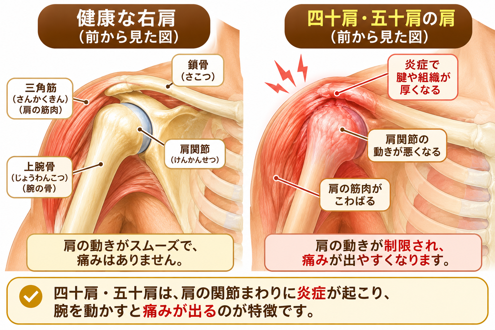

急性期 炎症・疼痛期
- 肩の状態
- 関節包に強い炎症があります。動かすと鋭く痛み、安静でもズキズキして、夜間痛で眠りにくくなります。
- 過ごし方
- 痛みが強く出る動きは避けます。無理なストレッチは痛みを悪化させるため控えます。一方で、長く固定すると肩が固まりやすくなるため、三角巾などの使用は必要最小限にします。夜は、痛む側の腕の下にクッションやたたんだタオルを入れて支えます。
- 医療でできること
- 痛み止め(内服・外用)、関節内注射で痛みを抑えます。
肩関節周囲炎 / 癒着性関節包炎
腕が上がらない、服の袖が通しにくい、夜に肩の痛みで目が覚める。そんなときに知っておきたい、肩の中で起きていること、経過の見通し、動きによる見分け方を、医学的な根拠に沿ってまとめました。
肩の痛みと一緒に、胸の圧迫感、息苦しさ、冷や汗、吐き気がある場合は、心臓などの病気の可能性があります。様子を見ずに、すぐ119番か救急外来に相談してください。
四十肩・五十肩の正式な病名は肩関節周囲炎で、その多くは、肩の関節を包む袋(関節包)が炎症を起こし、厚く縮んで上腕骨頭に張りつく癒着性関節包炎の状態です。袋が縮むと、関節の中の空間が狭くなり、動かせる範囲が小さくなります。年齢によって呼び名が変わるだけで、40歳でも50歳でも同じ病態をさします。

医学的な補足：四十肩・五十肩（癒着性関節包炎）の中心となる変化は、肩関節を包む関節包の炎症・肥厚・拘縮です。イラストは説明用の模式図で、実際の状態や程度には個人差があります。
はっきりした原因は分かっていません。糖尿病(予備群を含む)や甲状腺の病気がある人は、なりやすく長引きやすいことが知られています。片方の肩になった人は、反対側にも起こりやすくなります。腱板の炎症、骨折、手術のあとに続いて起こることもあります。
典型的には、急性期(痛みの時期)、拘縮期(固まる時期)、回復期(ほぐれる時期)の順に進みます。次の図は、痛みと、動かせる範囲の変化を、月数で示した模式図です。
期間や強さには個人差が大きく、時期の境目もはっきりしません。時期の区切りは、治療や過ごし方を考えるための目安です。まれに、完全には元の動きに戻らない人もいます。
診察では、肩を自分で動かしたとき(自動)と、他の人に動かしてもらったとき(他動)の可動域を比べます。四十肩・五十肩では、関節そのものが固いため、どちらも同じあたりで止まります。腱板が切れている場合は、他動では上がっても、自動では上がりません。下の図で、その違いを確かめられます。
例の値を表示しています。ご自身の肩に合わせて動かしてみてください。
支えてもらうときは、痛みが出る手前までにとどめ、無理に押してもらわないでください。健康な肩では、腕はおおむね150〜180°まで上がります。この図は診断ではありません。
腕を前から真上へ。左右で、上がる高さを比べます。
手を背中に回し、親指がどの高さまで届くかを比べます。左右差が大きければ、肩が固まっているサインです。
肘を脇につけたまま、前腕を外へ開きます。四十肩・五十肩では、最も早く、強く制限されやすい動きです。
肩の痛みの原因は、四十肩・五十肩だけではありません。見分ける手がかりは、痛みの始まり方と、自分で動かす・支えてもらうときの動きの違いです。下の表は一般的な傾向で、診断は診察と検査で行います。
| 状態 | 起こり方 | 肩の動き | 診察・検査での手がかり | 気づきやすいサイン |
|---|---|---|---|---|
| 四十肩・五十肩 癒着性関節包炎 |
きっかけなく、徐々に。夜間痛が多い | 自分でも、支えてもらっても上がらない。外旋、挙上、結帯が制限される | 他動の可動域が制限される。X線で大きな異常がない(ほかの病気の除外) | 袖を通す、髪を結ぶ、背中に手を回す動作がつらい |
| 腱板断裂 | 転倒や重い物を持った後。加齢で起こることも | 支えてもらうと上がるが、自分では上がらない、または保てない。関節は固くなりにくい | ドロップアームサイン(上げた腕を保てず落ちる)、外旋の筋力低下。超音波やMRIで確認 | 夜間痛もある。腕を上げた位置で保てない |
| 石灰沈着性腱板炎 | 突然の激しい痛み。朝起きたら痛い、ということも | 痛みのため、ほとんど動かせない | X線で、腱板に石灰の影が写る | 肩の一点を押すと、強く痛む |
| 肩峰下インピンジメント | 腕を使う動作の繰り返しで、徐々に | 腕を横から上げる途中(60〜120°ほど)だけ痛む。上げきると楽になる | ペインフルアーク、ニアーやホーキンスの徴候 | 肩が固まるとは限らない |
| 頸椎症性神経根症 | 首の動きや姿勢で、痛みが変わる | 肩そのものの動きは保たれる | スパーリングテスト。MRIで神経の圧迫を確認 | 腕から指先にかけてのしびれ、首のこり |
| 心臓などの病気 | 動作に関係なく、安静時や運動中に | 肩を動かしても、痛みは変わらない | 心電図などの緊急の検査 | 胸の圧迫感、息苦しさ、冷や汗。すぐ救急へ |
表は横にスクロールできます。複数の病気が重なっていることもあるため、自己判断せず、痛みが続くときは受診して確かめてください。
各時期の月数や回復の割合は、これらの資料にもとづく目安で、時期の区切りに明確な根拠は確立していません。最終確認日:2026年11月18日。
このページは一般的な情報をまとめたもので、診断や治療の代わりにはなりません。症状が気になる方は、医療機関に相談してください。